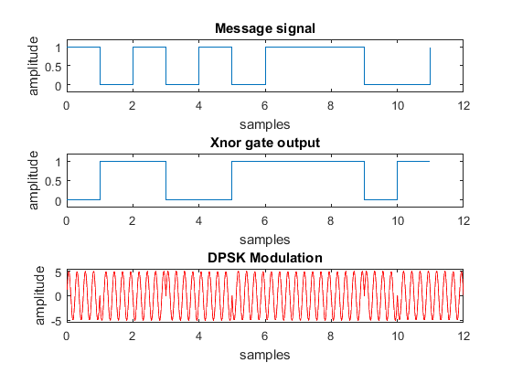

clc
clear all
close all
x= [1 0 1 0 1 0 1 1 1 0 0 1 ];
n1= length(x);
t1= 0:1:n1-1;
subplot(3,1,1)
stairs(t1,x)
title('Message signal');
xlabel('samples'); ylabel('amplitude');
axis([0 12 -0.2 1.2]);
r = xor(x(1),0);
b(1) = not(r);
for i=2:n1
r = xor(x(i),b(i-1));
b(i) = not(r);
end
b;
subplot(3,1,2)
stairs(t1,b);
title('Xnor gate output');
xlabel('samples'); ylabel('amplitude');
axis([0 12 -0.2 1.2]);
f= 4;
t2= 0.01:0.01:12;
w= 5*sin(2*pi*f*t2 + 0);
k= -w;
n2= length(w);
n=1;
for i=1:n1
for j=1:n2/n1
if(b(i)==0)
z(n)=w(n);
else
z(n)=k(n);
end
n=n+1;
end
end
z;
subplot(3,1,3)
plot(t2,z,'r');
title('DPSK Modulation');
xlabel('samples'); ylabel('amplitude');
axis([0 12 -5.5 5.5]);
